第 17 讲：社区之声与进阶 AI 系统——HTN、GOAP、MCTS 与机器学习入门
从分层任务网络到蒙特卡洛树搜索，再到强化学习，讲清楚游戏 AI 如何从“手写规则”走向“自动规划与学习”。
◆ 学完这一讲，你应该能
能用自己的话解释 HTN、GOAP、MCTS 三种规划方法的核心思想与区别
能画出 HTN 的规划流程，并说明原始任务与复合任务、方法、前提条件之间的关系
能说明 GOAP 如何通过目标、动作、代价和反向规划生成行为序列
能描述 MCTS 的四个迭代步骤（选择、扩展、模拟、回传）以及 UCB 如何平衡探索与利用
能区分监督学习、无监督学习、半监督学习和强化学习，并说明强化学习在游戏 AI 中的典型用法
能针对一个具体游戏（如 RTS）设计状态、动作、奖励和网络结构，并说明 SL 与 RL 的取舍
核心结论速记
HTN 用分层任务分解来规划：复合任务通过方法分解为子任务，原始任务对应具体动作，规划时按顺序检查前提条件并更新世界状态。
GOAP 从目标反向搜索动作，每个动作有前提、效果和代价，最终用 A* 等算法在状态-动作-代价图中找最低代价路径。
MCTS 通过大量随机模拟来评估动作价值，用 UCB 公式平衡探索与利用，适合状态空间巨大甚至“无限”的博弈场景。
强化学习用马尔可夫决策过程（MDP）建模：智能体在环境中根据策略选择动作，获得奖励，目标是最大化长期回报。
游戏 AI 的机器学习落地需要精心设计状态表示、动作空间、奖励函数和神经网络结构，AlphaStar 和 OpenAI Five 是典型工程案例。
监督学习需要高质量标注数据，强化学习需要可模拟的环境和稠密奖励；实际项目常采用“宏观用学习、微观用 FSM/BT”的混合架构。
011. 从社区反馈到本讲主线：为什么需要更高级的 AI
这一讲开头先处理了一些社区事务：T 恤样式投票结果、感谢社区贡献的笔记、以及几个 Q&A 问题（例如“AI 直接读玩家操作指令”的看法）。这些内容本身不是技术核心，但传递了一个信号：现代游戏引擎的 AI 系统已经不再是简单的“巡逻-追击-攻击”状态机，社区和玩家都在期待更聪明、更自然的行为。
课件随后给出本讲大纲：分层任务网络（Hierarchical Tasks Network, HTN）、目标导向动作规划（Goal-Oriented Action Planning, GOAP）、蒙特卡洛树搜索（Monte Carlo Tree Search, MCTS），以及机器学习基础和如何用机器学习构建进阶游戏 AI。这四块内容正好对应一条演进路线：
- HTN 和 GOAP 属于“手工知识 + 自动规划”，设计师写规则，AI 自己组合出行为序列；
- MCTS 属于“自动搜索”，AI 通过模拟来评估未来；
- 机器学习（尤其是强化学习）则让 AI 从数据或交互中自己学策略。
理解这条路线，你就能在 UE 或 Unity 里判断：什么时候用行为树（Behavior Tree, BT）就够了，什么时候需要 HTN/GOAP，什么时候才值得上机器学习。
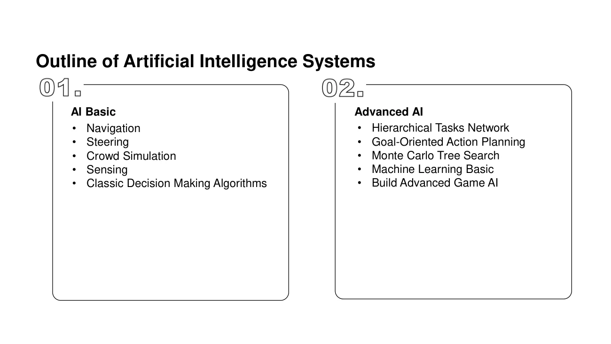
补充说明
本讲涉及的 AI 规划方法在 3A 项目中常作为“决策层”，动画和移动仍由动画蓝图、导航系统负责。
常见坑
把 HTN/GOAP 当成“替代行为树”的银弹 → 它们解决的是“生成计划”的问题，执行层仍常配合 BT/FSM → 先明确你的需求是“行为组合复杂”还是“单步决策复杂”。
UE / Unity 落地
UE 的 Behavior Tree 适合表达固定的行为层次，但节点间的动态组合能力弱；HTN/GOAP 通常需要自己写插件或 C++ 系统来实现。
Unity 的 Behavior Designer、NodeCanvas 等插件提供 BT/FSM，HTN/GOAP 也有第三方库，但核心规划器往往要自己维护。
022. HTN：像人一样分层做计划
分层任务网络（HTN）的核心直觉是：人做计划是分层的。比如“我要解毒”，可以分解为“找到药水”和“使用药水”；“找到药水”又可以分解为“去商店买”或“去野外采”。每一层只关心当前层的选择，而不是一上来就列出一长串原子动作。
HTN 框架包含几个关键部分：
- 世界状态（World State）：一组属性，比如“是否有药水”“是否中毒”“材料是否足够”。它是规划器的输入，反映当前世界。
- HTN 域（Domain）：通常从资产文件加载，描述分层任务之间的关系，包括任务、方法、前提条件等。
- 任务类型：分为原始任务（Primitive Task）和复合任务（Compound Task）。原始任务对应具体动作，有前提条件；复合任务包含多个方法（Method），每个方法有自己的前提条件，并分解为若干子任务。
规划时从根任务（Root Task）开始，递归地选择满足前提条件的方法，把复合任务分解为子任务，直到全部变成原始任务。规划过程中会假设动作成功并更新世界状态，如果后续前提条件不满足，就回溯选择其他方法。
HTN 的优点是结构清晰、可控性强，设计师能精确控制 AI 的行为逻辑；缺点是灵活性受限于预先写好的方法，遇到未预料的情况可能无计划可用。
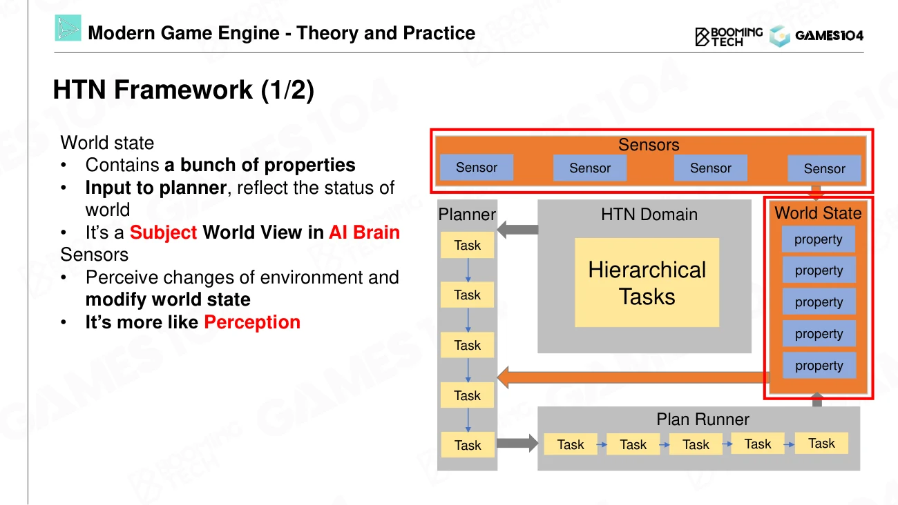
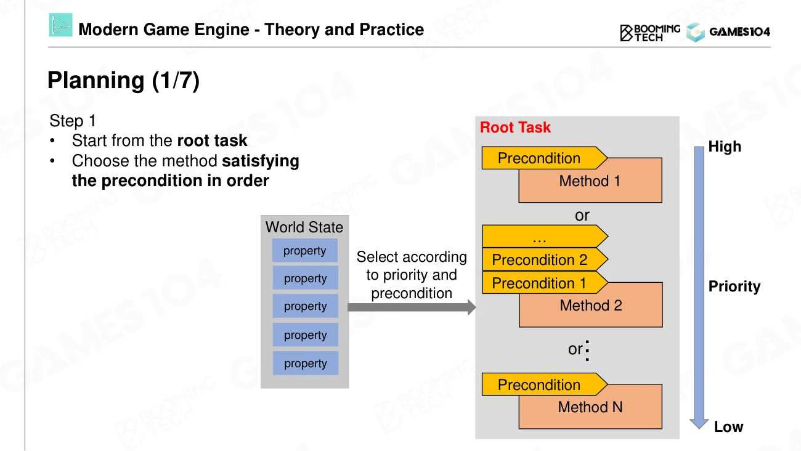
补充说明
HTN 的“假设成功”是规划阶段的简化，运行时仍需检查动作是否真正成功。
常见坑
世界状态属性设计太粗 → 规划器无法区分细微差别，导致方法选择错误 → 把关键条件拆成独立布尔/枚举属性。
方法的前提条件互相覆盖不全 → 规划失败时没有备选方法 → 为每个复合任务至少准备一个“兜底”方法。
规划时假设动作一定成功，但运行时可能失败 → 需要重规划（Replan）机制 → 在动作执行失败或世界状态变化时触发重新规划。
UE / Unity 落地
UE 中可用 C++ 或蓝图实现 HTN 规划器，世界状态可以放在 GameState 或自定义 UWorldSubsystem 中。
Unity 中可用 ScriptableObject 定义 HTN 域，运行时用 C# 规划器解析。
HTN 规划伪代码（简化）（cpp）
bool Plan(WorldState& ws, Task* task, vector<PrimitiveTask*>& plan) {
if (task->IsPrimitive()) {
if (!task->Precondition(ws)) return false;
plan.push_back(task);
task->ApplyEffect(ws); // 假设成功，更新世界状态
return true;
}
for (auto& method : task->Methods()) {
if (!method.Precondition(ws)) continue;
WorldState backup = ws;
bool ok = true;
for (auto* sub : method.SubTasks()) {
if (!Plan(ws, sub, plan)) { ok = false; break; }
}
if (ok) return true;
ws = backup; // 回溯
plan.resize(plan.size() - method.SubTasks().size());
}
return false;
}033. GOAP：从目标反向找动作
目标导向动作规划（GOAP）比 HTN 更自动化：它不预先规定任务层次，而是把每个动作描述成“前提条件 + 效果 + 代价”，然后从目标状态反向搜索，找到一条从当前状态到目标状态的动作序列。
GOAP 的结构包括：
- 传感器与世界状态：和 HTN 类似，传感器收集信息，世界状态是一组属性。
- 目标集（Goal Set）：每个目标有前提条件和优先级，规划时按优先级检查，选择第一个前提条件满足的目标。
- 动作集（Action Set）：每个动作有前提条件、效果和代价。
规划时，GOAP 先比较目标状态和当前世界状态，找出未满足的状态，把它们放入栈；然后从栈顶取出一个未满足状态，选择一个能产生该状态效果的动作，把动作压入计划栈，并把该动作的前提条件作为新的未满足状态继续检查。如果前提条件不满足，就继续反向找动作，直到所有前提条件都满足。
这个过程可以转化为状态-动作-代价图上的路径规划问题：节点是状态的组合，边是动作，边权是代价，然后用 A* 等算法找最低代价路径。GOAP 的优点是动态灵活，目标和行为解耦；缺点是规划结果可能不如 HTN 可控，且代价函数设计需要经验。
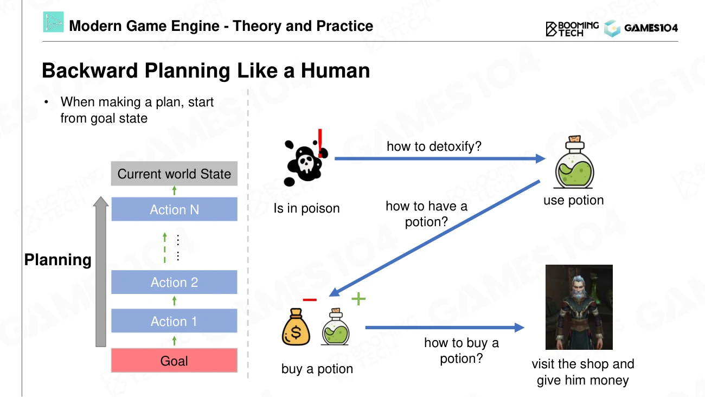
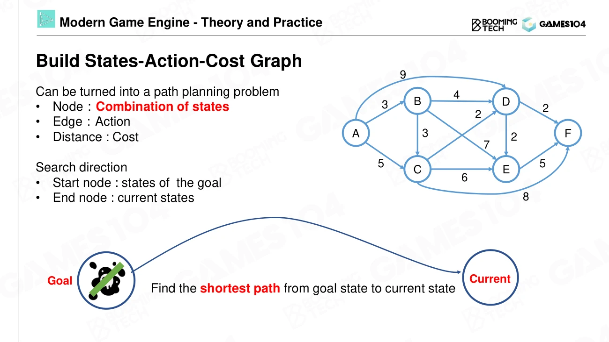
补充说明
实际工程中常用 A* 在状态空间搜索，而不是简单的栈式反向链，以处理动作之间的相互影响。
常见坑
动作效果写错（比如“使用药水”没有把“中毒”置为 false）→ 规划器找不到可行路径 → 逐个检查动作效果与世界状态属性是否一致。
代价函数全设为 1 → 规划器无法区分优劣，可能选出绕远路的方案 → 根据距离、风险、资源消耗设置合理代价。
目标优先级冲突 → 高优先级目标永远无法满足时，低优先级目标被饿死 → 设置超时或降级机制。
UE / Unity 落地
UE 中可用 C++ 实现 GOAP 规划器，动作可继承 UObject，便于在编辑器里配置。
Unity 中可用 ScriptableObject 定义动作和目标，运行时用 A* 在状态图上搜索。
GOAP 反向规划伪代码（简化）（cpp）
bool BackwardPlan(WorldState& ws, Goal& goal, vector<Action*>& plan) {
stack<Condition> unsatisfied;
for (auto& c : goal.Conditions())
if (!ws.Check(c)) unsatisfied.push(c);
while (!unsatisfied.empty()) {
Condition c = unsatisfied.top(); unsatisfied.pop();
Action* best = nullptr;
for (auto* a : actions)
if (a->Effect().Satisfies(c) && (!best || a->Cost() < best->Cost()))
best = a;
if (!best) return false;
plan.push_back(best);
for (auto& pre : best->Preconditions())
if (!ws.Check(pre)) unsatisfied.push(pre);
}
reverse(plan.begin(), plan.end());
return true;
}044. MCTS：在“脑内”模拟成千上万局
蒙特卡洛树搜索（MCTS）的直觉像下棋：高手会在脑中模拟很多种走法，选择看起来最有希望的那一步。MCTS 把这种“脑内模拟”变成算法：它维护一棵搜索树，节点是游戏状态，边是动作，通过大量随机模拟来评估每个动作的价值。
MCTS 的一次迭代包含四个步骤：
- 选择（Selection）：从根节点开始，按照一定策略（如 UCB）选择“最值得扩展”的子节点，直到到达一个可扩展节点。
- 扩展（Expansion）：为选中的节点添加一个或多个新的子节点，对应未尝试过的动作。
- 模拟（Simulation）：从新节点开始，按照默认策略（通常是随机走子）快速模拟到终局，得到一个结果。
- 回传（Backpropagation）：把模拟结果沿着路径回传，更新每个节点的统计值（如访问次数、累计奖励）。
如何平衡“探索”和“利用”？MCTS 常用 UCB（Upper Confidence Bounds） 公式： \[ \text{UCB} = \frac{Q_i}{N_i} + c \sqrt{\frac{\ln N}{N_i}} \] 其中 \(Q_i\) 是节点累计奖励，\(N_i\) 是节点访问次数，\(N\) 是父节点访问次数，\(c\) 是探索常数。第一项偏向利用（平均奖励高的节点），第二项偏向探索（访问次数少的节点）。
MCTS 的优点是能处理巨大的状态空间，行为多样，不需要手工设计评估函数；缺点是需要大量计算，实时性要求高的游戏要限制模拟次数或使用轻量级模拟。
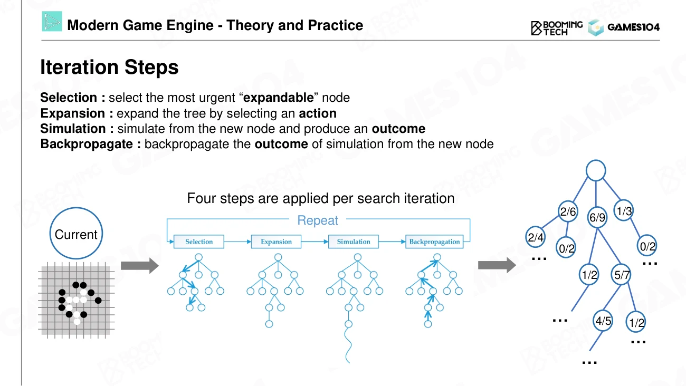
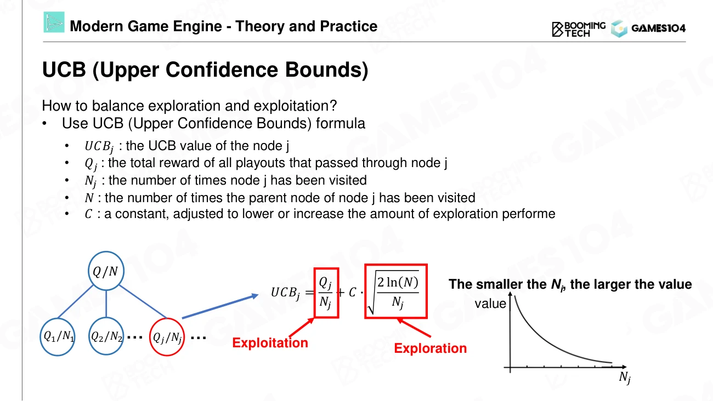
补充说明
MCTS 在棋类游戏（如 AlphaGo）中表现突出，在实时动作游戏中常与行为树结合，作为高层决策器。
常见坑
模拟次数太少 → 统计值不可靠，决策随机性大 → 增加迭代次数或使用启发式模拟策略。
UCB 的探索常数 c 设得太大 → 算法过于随机，忽略已知好动作 → 根据游戏分支因子调整 c，通常从 1.0 附近试起。
终局奖励设计不合理 → 模拟结果无法反映真实优劣 → 确保模拟的胜负判定与实际游戏规则一致。
UE / Unity 落地
UE 中可用 C++ 实现 MCTS，模拟阶段可以调用简化版游戏逻辑（不渲染、不播放动画）来加速。
Unity 中可用 Job System/Burst 加速模拟，但要注意状态拷贝的开销。
MCTS 单次迭代伪代码（cpp）
Node* Select(Node* root) {
Node* node = root;
while (!node->IsLeaf() && node->IsFullyExpanded()) {
node = node->BestChildByUCB();
}
return node;
}
void Iterate(Node* root) {
Node* leaf = Select(root);
Node* child = leaf->Expand();
float result = Simulate(child->State());
while (child) {
child->VisitCount++;
child->TotalReward += result;
child = child->Parent();
}
}055. 机器学习基础：四种学习范式与强化学习
课件把机器学习分为四类：
- 监督学习（Supervised Learning）：从带标签的数据中学习，比如给大量“状态-正确动作”对，训练网络模仿。
- 无监督学习（Unsupervised Learning）：从无标签数据中找结构，游戏 AI 中较少直接使用。
- 半监督学习（Semi-supervised Learning）：少量标签 + 大量无标签数据。
- 强化学习（Reinforcement Learning, RL）：智能体与环境交互，根据奖励信号学习策略。
强化学习用马尔可夫决策过程（Markov Decision Process, MDP）建模，基本元素包括：
- 智能体（Agent）：学习者和决策者。
- 环境（Environment）：智能体交互的外部世界。
- 状态（State）：智能体对环境的观察，通常是一个数据结构。
- 动作（Action）：智能体可执行的最小行为单元。
- 奖励（Reward）：每个时间步收到的特殊信号，指导学习。
- 策略（Policy）：从状态到动作概率的映射 \(\pi(a|s)\)。
MDP 还包含转移概率 \(P(s'|s,a)\)，表示在状态 \(s\) 执行动作 \(a\) 后到达 \(s'\) 的概率。强化学习的目标是找到最优策略，最大化长期累积奖励。
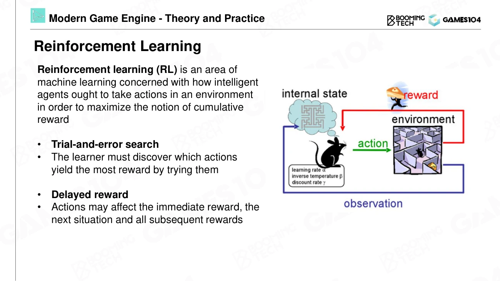
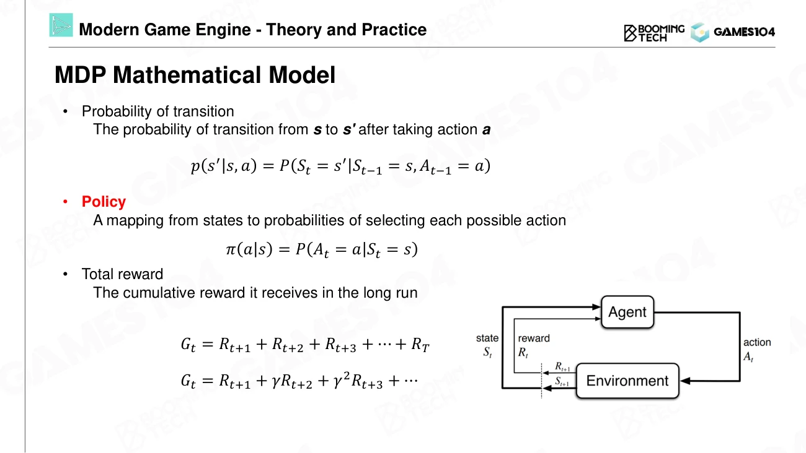
补充说明
ML-Agents 是 Unity 官方强化学习工具，适合入门；UE 没有官方对应工具，通常需要自己搭训练管线。
常见坑
把监督学习的数据集直接用于 RL → RL 需要交互和奖励，不是静态标签 → 明确问题类型再选方法。
状态表示遗漏关键信息（如冷却时间、视野）→ 智能体无法做出正确决策 → 检查状态是否满足马尔可夫性。
奖励稀疏导致学习困难 → 智能体很少收到有效信号 → 设计稠密奖励或使用课程学习。
UE / Unity 落地
UE 中可用 Python 训练 RL 模型，再通过 ONNX 或自定义插件在 C++ 中推理。
Unity 提供 ML-Agents 工具包，支持用 Python 训练并在 Unity 中推理。
066. 用机器学习构建进阶游戏 AI：从状态设计到训练策略
课件以 RTS 游戏为例，展示如何把游戏建模成 DRL 问题：
- 状态（State）：包括地图信息（高度、可见性、迷雾、可通行、可建造）、单位信息（类型、所有者、状态、位置等）。
- 动作（Action）：对每个单位，动作包括“做什么”（移动、攻击、建造）、“对谁”、“在哪里”、“何时”。
- 奖励（Reward）：直接奖励如胜利 +1、失败 -1；也可以设计伪奖励（如击杀、资源采集）来加速学习。OpenAI Five 在 Dota2 中使用了更稠密的奖励设计。
神经网络结构选择取决于特征类型：
- 多层感知机（MLP）：经典、易实现，适合低维向量特征。
- 卷积神经网络（CNN）：对图像数据敏感，适合处理地图。
- Transformer：引入注意力机制，适合不定长向量和单位集合。
- LSTM：让 AI 记住或遗忘早期信息，适合部分可观测环境。
训练策略上，AlphaStar 先用监督学习从人类录像中学习基础策略，再用强化学习自我对弈提升；训练时使用多个智能体池（主池、利用池、联盟池）进行对抗，避免过拟合。
课件最后讨论了 RL 与 SL 的取舍：SL 需要高质量数据，容易实现但上限受数据限制；RL 更动态，但需要可模拟环境和稠密奖励。实际项目常采用混合架构：宏观决策用学习模型，微观执行用 FSM/BT，以平衡效果和成本。
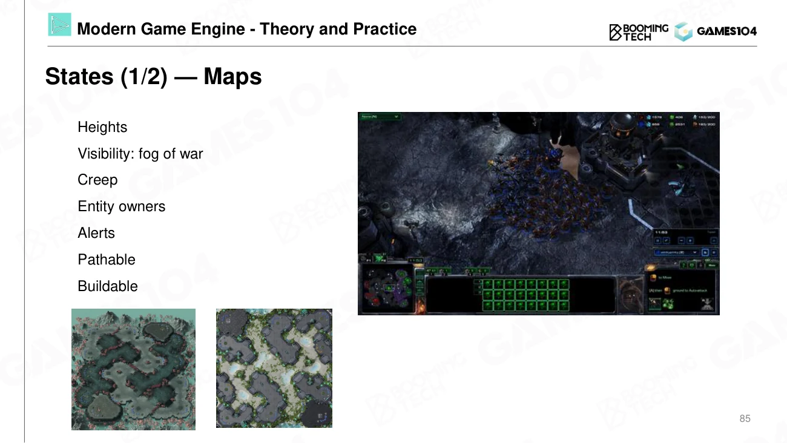
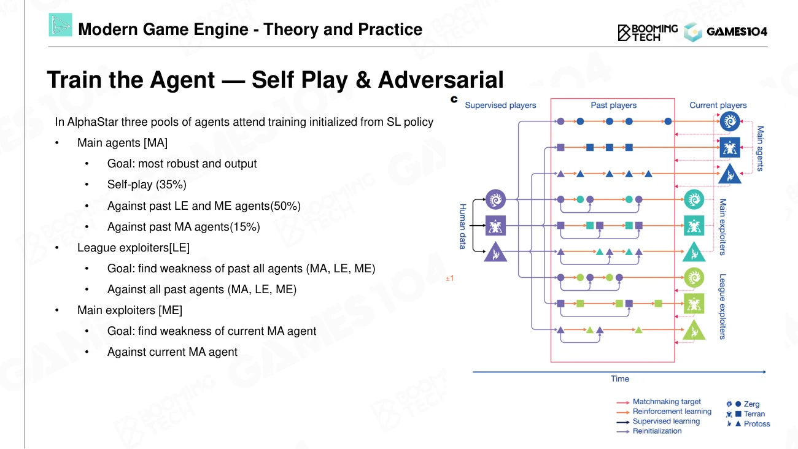
补充说明
工业级训练通常需要大量并行环境和分布式训练，个人开发者可从 ML-Agents 或小型游戏开始。
常见坑
状态特征未归一化 → 网络训练不稳定 → 对位置、血量等做归一化处理。
动作空间设计过大 → 学习效率低 → 分解动作（先选类型，再选目标），或使用动作掩码。
奖励函数设计不当 → 智能体学会“刷分”而不是赢 → 奖励要与最终目标一致，并做奖励裁剪。
UE / Unity 落地
UE 中可用 ONNX Runtime 加载训练好的模型，在 C++ 中做推理；状态采集可通过自定义 Gameplay Debugger 或数据接口。
Unity ML-Agents 支持用 Python 训练，并通过 Barracuda 在 Unity 中推理，适合快速原型。
引擎对照表
| 概念 / 效果 | Unreal Engine | Unity |
|---|---|---|
行为树/状态机 | Behavior Tree、State Tree | Behavior Designer、NodeCanvas、PlayMaker |
HTN 规划 | 无官方内置，需自写 C++/插件 | 第三方库或自写 C# |
GOAP 规划 | 无官方内置，需自写 C++/插件 | 第三方库或自写 C# |
MCTS 搜索 | C++ 实现，模拟阶段可调用简化逻辑 | C# 实现，可用 Job System 加速 |
强化学习训练 | Python 训练 + ONNX 推理 | ML-Agents（Python 训练 + Barracuda 推理） |
神经网络推理 | ONNX Runtime、NNE（Neural Network Engine） | Barracuda、Sentis |
术语双语表
| English | 中文 | 说明 |
|---|---|---|
| HTN (Hierarchical Tasks Network) | 分层任务网络 | 用分层任务分解来生成计划，复合任务通过方法分解为子任务。 |
| GOAP (Goal-Oriented Action Planning) | 目标导向动作规划 | 从目标反向搜索动作，每个动作有前提、效果和代价。 |
| MCTS (Monte Carlo Tree Search) | 蒙特卡洛树搜索 | 通过大量随机模拟评估动作价值，用 UCB 平衡探索与利用。 |
| UCB (Upper Confidence Bounds) | 上置信界 | MCTS 中选择节点的公式，兼顾平均奖励和访问次数。 |
| MDP (Markov Decision Process) | 马尔可夫决策过程 | 强化学习的数学框架，包含状态、动作、奖励、转移概率和策略。 |
| Policy | 策略 | 从状态到动作概率的映射，记作 π(a|s)。 |
| Supervised Learning | 监督学习 | 从带标签数据中学习输入到输出的映射。 |
| Reinforcement Learning | 强化学习 | 智能体通过与环境交互、根据奖励信号学习策略。 |
| Self-Play | 自我对弈 | 智能体与自己或历史版本对战来提升策略，AlphaStar 使用多池训练。 |
课后练习
01 HTN 中原始任务和复合任务的区别是什么？规划时如何处理复合任务？
查看答案
提示：
从任务是否可直接执行、是否包含方法两个角度回答。
原始任务对应可直接执行的具体动作，有前提条件；复合任务包含多个方法，每个方法有前提条件并分解为若干子任务。规划时遇到复合任务，会遍历其方法，选择前提条件满足的方法，递归地规划其子任务；如果子任务规划失败，则回溯尝试下一个方法。
02 GOAP 的反向规划中，如何确定一个动作是否应该被选中？请结合前提、效果和代价说明。
查看答案
提示：
从“满足未满足状态”和“代价最小”两个条件考虑。
当栈中取出一个未满足状态时，规划器会在动作集中寻找效果能够满足该状态的动作；如果有多个动作都能满足，则选择代价最小的那个。选中后，把该动作的前提条件作为新的未满足状态压栈，继续反向搜索，直到所有前提条件都满足。
03 MCTS 的 UCB 公式中，两项分别代表什么？如果探索常数 c 设得过大或过小，会有什么现象？
查看答案
提示：
第一项是平均奖励，第二项与访问次数有关。
UCB 公式为 Q_i/N_i + c*sqrt(ln N / N_i)。第一项 Q_i/N_i 是利用项，表示该节点的平均奖励；第二项是探索项，访问次数 N_i 越小，探索项越大。c 过大时，算法偏向探索，行为随机，可能忽略已知好动作；c 过小时，算法偏向利用，容易陷入局部最优。
04 假设你要为一个 RTS 游戏设计强化学习的状态和动作，请列出至少 5 个状态特征和 3 类动作。
查看答案
提示：
参考课件中地图信息和单位信息的分类。
状态特征示例：地图高度、可见性（迷雾）、可通行区域、单位类型、单位位置、单位血量、资源数量。动作类别示例：移动（到某位置）、攻击（某目标）、建造（某建筑）、采集（某资源）。动作还可以进一步分解为“做什么、对谁、在哪里、何时”。
05 在什么情况下你会选择监督学习而不是强化学习？请结合数据、奖励和环境三个因素说明。
查看答案
提示：
考虑数据获取难度、奖励稀疏性和环境模拟成本。
当有大量高质量人类录像或标注数据、且行为可以模仿时，监督学习更合适；当奖励稀疏、环境模拟成本高、难以设计稠密奖励时，强化学习训练困难，此时监督学习或混合方法更实际。反之，如果环境可快速模拟、奖励设计合理，强化学习能超越人类数据上限。